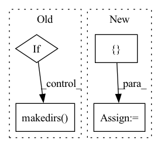

Pattern ID :24532

Before Change
mode = "random_sampling"
today = date.today().strftime("%d_%m_%Y")
if LOCAL:
checkpoint_folder = "checkpoints/{}/".format(today)
try:
os.makedirs(checkpoint_folder)
except:
print("checkpoint_folder already exists")
if mode == "bit_corruption":
After Change
checkpoint_folder, base_path, cluster_path, sparseFP_vocab_path = setup_paths(expt_name, mode, LOCAL, cosine, multi)
trainargs = {
"model": "Feedforward",
"hidden_sizes": [1024, 256],
"output_size": 1,
"dropout": 0.1,
"batch_size": 64,
"activation": "ReLU",
"optimizer": torch.optim.Adam,
"learning_rate": 3e-3, // to try: lr_finder & lr_schedulers
"epochs": 50,
"early_stop": True,
"min_delta": 1e-5, // we just want to watch out for when val_loss increases
"patience": 3,
"num_workers": 4,
"checkpoint": True,
"model_seed": 1337,
"random_seed": 0, // affects neg rxn sampling since it is random
"rctfp_size": 4096, // if fp_type == "diff", ensure that both rctfp_size & prodfp_size are identical!
"prodfp_size": 4096,
"fp_radius": 3,
"fp_type": "diff",
"num_neg_prod": 5,
"num_neg_rct": 5,
"num_bits": 3,
"num_neg": 10,
"base_path": base_path, // refer to top of notebook
"checkpoint_path": checkpoint_folder,
"cluster_path": cluster_path,
"sparseFP_vocab_path": sparseFP_vocab_path,
"query_params": {"efSearch": 100}, // good value to hit 96% recall
"expt_name": expt_name,
"device": torch.device("cuda" if torch.cuda.is_available() else "cpu")
}
model = FeedforwardEBM(trainargs)
experiment = Experiment(model, trainargs, mode=mode)
In pattern: SUPERPATTERN
Frequency: 3
Non-data size: 4
Instances
Fragment ID: 76244602
Project Name: coleygroup/rxn-ebm
Commit Name: 70c19fb3c2a4341f00c4c06cbc73fd0ceff714f3
Time: 2020-09-13
Author: linmin001@e.ntu.edu.sg
File Name: trainEBM.py
M Class Name: AnonimousClass
N Class Name: AnonimousClass
M Method Name: trainEBM(0)
N Method Name: trainEBM(0)
M Parent Class:
N Parent Class:
M File Name: trainEBM.py
N File Name: trainEBM.py
M Start Line: 7
M End Line: 89
N Start Line: 13
N End Line: 59
'>
Before Change
self.min_val_loss = np.Inf
self.result_path = os.path.join("results", config["session_name"])
self.checkpoint_path = os.path.join(self.result_path, "checkpoints/chkp.tar")
if not os.path.exists(self.result_path):
os.makedirs(self.result_path)
// load network parameters and optimizer if resuming from previous session
if config["previous_session"] != "":
resume_path = "{}/{}/{}".format("results", config["previous_session"], "chkp.tar")
After Change
self.config = config
self.max_epochs = self.config["trainer"]["max_epochs"]
// self.lr_decay_ee = self.config["optimizer"]["lr_decay_ee"]
self.lr_decays = {} // {i: 0.1 ** (1 / self.lr_decay_ee) for i in range(1, self.max_epochs)}
def train_epoch(self, epoch):
'>
Fragment ID: 76244601
Project Name: utiasasrl/hero_radar_odometry
Commit Name: 47db13d7623cdffa8a11fa4fcb33c9ba320a28b0
Time: 2020-08-14
Author: mona.gridseth@robotics.utias.utoronto.ca
File Name: utils/trainer.py
M Class Name: Trainer
N Class Name: Trainer
M Method Name: __init__(7)
N Method Name: __init__(5)
M Parent Class:
N Parent Class:
M File Name: utils/trainer.py
N File Name: utils/trainer.py
M Start Line: 36
M End Line: 59
N Start Line: 14
N End Line: 52
'>
Before Change
self.output_dir = output_dir
if self.output_dir:
os.makedirs(self.output_dir, exist_ok=True)
self.k = interpolation_k
self.classification_dict = classification_dict
After Change
for class_index, class_code in enumerate(classification_dict.keys())
}
self.logits_sub: List[torch.Tensor] = []
self.pos_sub: List[torch.Tensor] = []
self.batch_sub: List[torch.Tensor] = []
self.idx_in_full_cloud_list: List[np.ndarray] = []
def load_full_las_for_update(self, raw_path: str):
'>
Fragment ID: 76244600
Project Name: ignf/lidar-deep-segmentation
Commit Name: 5c03169ac337f58fbf57200f4c9c12f862752be1
Time: 2022-06-09
Author: charles.gaydon@gmail.com
File Name: myria3d/models/interpolation.py
M Class Name: Interpolator
N Class Name: Interpolator
M Method Name: __init__(4)
N Method Name: __init__(5)
M Parent Class:
N Parent Class:
M File Name: myria3d/models/interpolation.py
N File Name: myria3d/models/interpolation.py
M Start Line: 27
M End Line: 61
N Start Line: 56
N End Line: 59